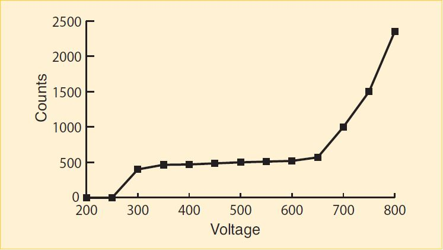
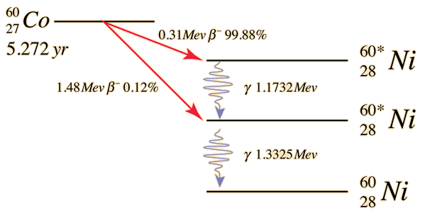

You will expected to turn in every plot and table you make for this lab, as well as justify the reasoning behind your answers.
The nuclei of some atoms are unstable. In the process of becoming more stable, they emit various particles. This phenomenon is known as radioactive decay. The most common energy forms are alpha and beta particles, and gamma rays.
Alpha particles are fast moving helium ions. They contain 2 protons and 2 neutrons, and do not have the surrounding valence electrons. They have high energy, typically in the MeV range (mega electron volts.), but due to their large mass, they are stopped by just a few inches of air, or a piece of paper.
The beta particle is identical to the electron except for its origin; beta particles are emitted from the breakdown of nuclei. Beta particles are emitted with a wide range of energies from near zero to MeV. Since electrons are much lighter than helium atoms, they are able to penetrate farther, through several feet of air, or several millimeters of plastic or light metals.
Gamma radiation, unlike alpha or beta radiation is an electromagnetic wave. Most electromagnetic waves, such as x-rays, light waves, and radio waves are generated outside the nucleus by electron transitions or electron decelerations in the case of x-rays. Gamma rays on the other hand, are produced by energy transitions within the nucleus. Depending on their energy, they can be stopped by a thin piece of aluminum foil, or they can penetrate several inches of lead.
A device called a Geiger counter can be used to detect alpha and beta radiation. The Geiger-Müller tube (or GM tube) is the sensing element of a Geiger counter. It can detect a single particle of ionizing radiation, and is typically connected to electronic circuitry that produces an audible click for each event. It was named for Hans Geiger who invented the device in 1908 and Walther Müller who collaborated with Geiger in developing it further in 1928.
The Geiger-Müller tube consists of a tube filled with an inert gas such as helium, neon or argon, and an organic vapor or a halogen. The tube contains electrodes, between which there is an electrical voltage of several hundred volts, but no current flowing. The walls of the tube are metal (or have the inside coated with metal) to form the cathode. The anode is a wire passing through the center of the tube insulated from the cathode.
When ionizing radiation passes through the tube, it ionizes some of the gas molecules. This creates positively charged ions and free electrons. The electric field created by the tube’s electrodes accelerates particles. The ions are pulled to the cathode; the electrons to the anode. The charged particles gain sufficient energy to ionize other molecules. This creates an avalanche of charged particles and results in a short, intense pulse of current from the negative electrode to the positive electrode.

The Geiger-Müller counter has applications in the fields of nuclear physics, geophysics (mining) and Voltage medical therapy with isotopes and x-rays.
The sensitivity of a GM tube depends on how much voltage is placed between the anode and cathode. If the voltage is too small, ionizing events will not cause a discharge and the radioactive event will not be counted. If the voltage is too great, the tube will breakdown, resulting in discharges when no radioactive events have occurred. This results in an artificially high count. A properly functioning GM tube will exhibit a “plateau” effect, where the counting rate remains nearly constant over a range of applied voltage. The correct operating voltage for the Geiger-Mueller tube may be determined experimentally using a small radioactive source. Figure 1 displays a typical plateau curve.
In this lab we use the ST-150 Nuclear Lab Station to make radiation measurements using a Co-60 gamma source. We will place it in the detector at different distances and with various absorbers.
The quantities of radiation in this lab are safe and will not hurt you.
The basic operation of the ST-150 is straightforward; it does the counting for you over the time interval that you specify.
The sample holder provides six positions with 1 cm separation between each. Each position can hold either a radioactive source or an absorber.
To improve sensitivity to alpha and beta particle radiation, many GM tubes have an extremely thin entrance window. If broken it cannot be repaired. Never allow objects to touch the window.
Exercise 1
In this exercise we will introduce our instrument the ST150 and measure the rate of radiation around us.
Question 1
What is the average rate of background radiation in the physics lab? Answer in units of counts per minute.
Background radiation is usually high energy cosmic rays from sources outside the earth.
Cobalt-60 is a radioactive isotope of Cobalt. It has a half-life of 5.27 years. It eventually decays into the stable element Nickel-60. The decay scheme for Co-60 is shown in Figure 3. You can see in this figure how Co-60 emits two different energy beta particles. This transmutes the nucleus into that of Ni-60 but it its excited state. To get to the most stable ground state the excited nuclear will emit gamma rays, each time lowering its energy, finally becoming stable Ni-60.

From HyperPhysics.com
Exercise 2
In this exercise we will measure the activity of a Co-60 source with the beta particles being blocked.
Question 2
What is the activity of the C0-60 in units of counts per minute? Remember to subtract off the background counts! We only want to count radiation coming from the C0-60 and not elsewhere in the environment.
In this lab we will measure the mass attenuation coefficient of Cobalt-60 in lead. The mass attenuation coefficient is a measure of how much radiation a given material will absorb or scatter.
There are two types of absorbers in this lab: aluminum and lead. They come in various thicknesses, and each material has a characteristic density. The likelihood that a radioactive particle is absorbed depends primarily upon the amount of mass a particle encounters.
Regardless of the material’s different densities, we employ a method that allows us treat them all similarly. If we measure the amount of material traversed in rather than the linear thickness traveled by the particle we get a more useful quantity, density thickness. It is a measure of the amount of material behind each corresponding amount of area, or the amount of mass a particle must travel through before exiting the absorber.
Mathematically we see that:
Alternatively:
Density thickness has dimensions of mass/area, we will use .
The nice part about density thickness is that it combines linearly. That means if you had a material with density thickness 300 and another with 100 and you stacked them on top of each other, the total density thickness would be 400 .
Gamma radiation is part of the electromagnetic spectrum and is the highest known energy-form in the universe. Because of the high energy, gamma ray absorption by matter is significantly lower than beta or alpha particles. In this lab you will subtract off the background count from each run. This is because there is not enough lead to stop the gamma rays from the Co-60 source to the background level.
Exercise 3
In this exercise we measure the number of gamma rays leaving the Co-60 source, passing through a number of lead sheets, and entering the detector. We will make a table of measurements which we will then use in the next exercise to determine the mass absorption coefficient of lead.
Make a table like the following. Remember for each run you should subtract of the background number of counts you measured in Exercise 1, this is what we will call "Net Counts" in the table.
| Density Thickness [] | Counts | Net Counts | Activity [cpm] |
|---|---|---|---|
| _ |
Exercise 4
Question 3
What kind of curve does your data follow (straight line, exponential, parabolic, etc)?
The mass attenuation coefficient for a specific material, defined as tells us how well a material absorbs or scatters radiation The behavior of radiation as it passes through matter is given by the formula:
where N is the number of counts per unit time (activity) after passing through an absorber of thickness x, is the number of counts incident on the absorber per unit time, the quantity is the mass attenuation coefficient, is the linear density in and is the density of the absorber material in . If we take the natural logarithm of both sides we obtain:
The above equation follows the form , with and
Exercise 5
Question 4
a. What is your computed value for the mass attenuation coefficient of lead?
b. How does this compare to the accepted value of ? Your error may be .
d. What density thickness would you need to reduce the intensity of radiation by 1⁄2? Use the accepted value of the mass attenuation coefficient in your calculation.
e. How much lead is this? Estimate the number of the thickest lead absorbers (absorber 11) you would need to add up in order to achieve the requirement calculated in part d.
Exercise 6
Write a brief conclusion summarizing the important points of this lab.